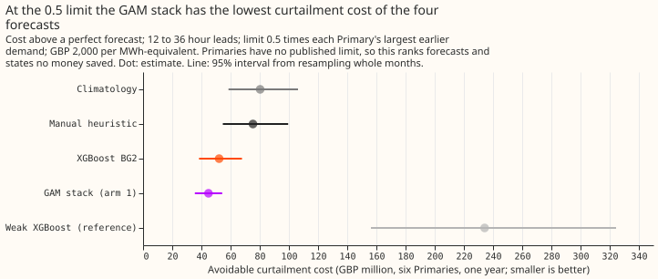
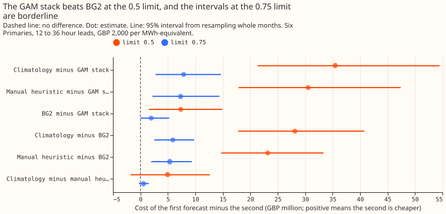
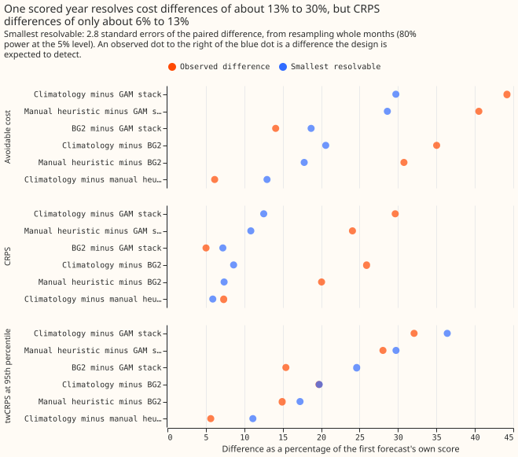
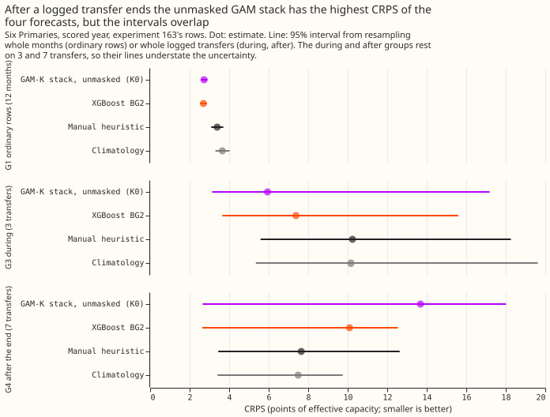
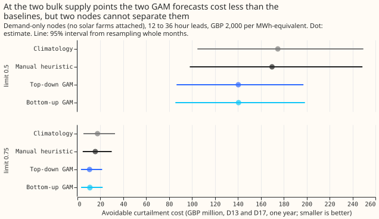

What the curtailment metric says about climatology, the manual heuristic, XGBoost BG2, and the GAM stack
On ordinary days the curtailment metric ranks the four existing forecasts as the continuous ranked probability score (CRPS) does and can tell the GAM stack from BG2, but inside the windows around the 7 logged load transfers it cannot separate the stack from BG2. The curtailment metric is the cost of the generation that would have to be cut because a forecast let a substation's flow exceed a limit; experiment 268 defined it. We applied it to the forecasts that already exist, using the demand at each substation only (no generators attached), and measured how small a difference the scored rows can resolve. A load transfer is a logged switching of demand from one substation to another.
The four forecasts are climatology (average power for the same time of year and day), the manual heuristic (the rule National Grid Electricity Distribution (NGED) uses today), BG2 (best guess 2, an XGBoost forecast configured like the production service), and the GAM stack of experiments 220 and 251. The GAM stack combines a generalised additive model (GAM) with a Kalman filter on its recent errors, a small neural-network head, and a summary of how the ensemble weather forecast's solar output varies. The scored rows are one year (2025-07-02 to 2026-06-30) at six Primary substations (D5, D9, D10, D11, D14, and D16), which step 33 kV down to 11 kV. This is step 3 of the load-shift decision program; the steps that follow are described under "How small a difference one year of rows can resolve".
Verdict: supported on the pre-registered rows, with one prediction failed and the BG2 separation narrow. At the 0.5 limit the avoidable cost (cost above a perfect forecast) orders the forecasts climatology, manual heuristic, BG2, GAM stack, from worst to best, and climatology minus the stack is GBP 35.5 million (95% 21.4 to 54.5 million). The failed prediction is that BG2 minus the stack would include zero: it is GBP 7.35 million (1.6 to 14.9 million). Primaries have no published limit, so every money figure on this page ranks forecasts and states no money saved.
After a logged transfer ends, the order reverses on CRPS. The unmasked stack is then the worst forecast on CRPS, but 7 transfers cannot separate the stack from the other forecasts. On cost at the 0.5 limit the worst forecast after a transfer is BG2, and the order is not reversed.





Row groups: ordinary days and the windows around load transfers
Rows are the six Primaries' half-hours with a 12 to 36 hour lead for cost, and all leads for CRPS and MAE. G0 uses experiment 251's rows (the stack is its arm 1). G1 to G5 use experiment 163's rows, where the stack is the unmasked GAM-K stack K0 (a different build, with five stored quantiles), so the first column of the table is K0 for G1 to G5. The logged transfers are the 7 of experiment 163; the group sizes are rows, and the unit of resampling is a transfer, or a calendar month for G0 and G1.
| Group | Rows (transfers) | CRPS: stack (K0 from G1), BG2, manual heuristic, climatology | Avoidable cost at 0.5, GBP million |
|---|---|---|---|
| G0 all 251 rows | 561,207 | 2.58, 2.72, 3.40, 3.67 | 44.82, 52.17, 75.36, 80.30 |
| G1 ordinary | 556,809 | 2.73, 2.70, 3.39, 3.66 | 44.86, 50.73, 74.42, 79.12 |
| G2 before the alarm | 11 (1) | 19.21, 16.15, 14.13, 24.00 | no half-hour at a 12 to 36 hour lead |
| G3 during | 12,168 (3) | 5.94, 7.38, 10.24, 10.16 | 3.46, 8.46, 15.42, 18.08 |
| G4 after the end | 3,675 (7) | 13.69, 10.09, 7.65, 7.49 | 2.49, 2.65, 1.69, 1.72 |
| G5 near (G2 + G3 + G4) | 15,854 (7) | 7.75, 8.01, 9.64, 9.55 | 5.95, 11.11, 17.11, 19.80 |
- What the groups show. During a transfer the stack is best (CRPS 5.94). After the transfer ends, the stack is worst (13.69, against 7.49 for climatology), because the stack carries the transfer's lagged power into its forecast. G4 minus the stack: BG2 -3.59 CRPS points (95% -5.71 to +0.12), climatology -6.19 (-8.62 to +1.71).
- Cost during and after a transfer. During a transfer (G3, 3 transfers), BG2, the manual heuristic, and climatology cost more than the stack at the 0.5 limit (BG2 minus stack GBP 5.0 million, 0.001 to 13.6 million). After the end, the only cost interval that excludes zero is BG2 minus the stack at the 0.75 limit (GBP -0.05 million, -0.12 to -0.002).
- The intervals are not reliable. With 3 transfers there are only 10 distinct resamples, so the G3 figures are point estimates by transfer and not 95% intervals. The 7-transfer intervals of G4 and G5 understate the uncertainty for the same reason. The transfers are also not independent: 3 of them appear in both G3 and G4, and one involves two Primaries. Several G3 and G5 CRPS and cost intervals for climatology and the manual heuristic against the stack exclude zero, and they carry the same warning.
- Row-group sizes. G2 has 11 rows from one transfer and no scored half-hour, so it is unreadable. The cost columns use only half-hours at a 12 to 36 hour lead: 80,143 in G1, 1,997 in G3, 926 in G4, and 2,923 in G5, while the CRPS columns use all leads. 243 rows sit in both G3 and G4, so G5 counts them twice (1.5% of its rows).
- Splits (G6). Season, G1: BG2 minus the stack is +0.22 CRPS points (95% +0.16 to +0.26) from November to March and -0.20 (-0.36 to -0.03) from April to October, so the stack's gain is a winter gain, as in experiment 251. Duration, G5: none of the 7 transfers lasted under 6 hours, 5 lasted 6 to 24 hours (1,138 rows), and 2 lasted over a day (14,716 rows). Substation, G5: transfers appear at D5 (10,725 rows, 3 transfers), D16 (4,335, 2), D14 (692, 3), and D10 (102, 1), and none at D9 or D11. The stored transfers carry no size, so the split by size of shift is not available, and the margins of 7 days either side are not stored, so G5 is the union of the three phases only.
How small a difference one year of rows can resolve
One year of scored rows resolves a difference of about 7% of the CRPS and 19% of the avoidable cost between BG2 and the GAM stack, and the near-transfer rows resolve far less. The smallest resolvable difference is 2.8 standard errors of the paired difference (80% power at the 5% level), from resampling whole calendar months, or whole transfers in the near groups.
- Ordinary year, BG2 minus the stack. Cost: observed GBP 7.35 million, smallest resolvable 9.75 million (18.7%). CRPS: observed 0.137, smallest resolvable 0.196 points. Tail-weighted CRPS at the 95th percentile (twCRPS): observed 0.028, smallest resolvable 0.044. The difference is real by the 95% interval and below the 80%-power size, so it was found with little to spare.
- Climatology and the manual heuristic. Climatology minus the stack is resolved (cost observed 35.5 against 23.9 million; CRPS observed 1.09 against 0.46). Climatology minus the manual heuristic is not (cost 4.9 against 10.4 million).
- Load-shift effects against the resolvable size. Experiment 208's effect on the pooled year is 0.005 points, about 40 times below the smallest resolvable CRPS difference of 0.196 points. Its effect of 1.50 points after a transfer is below the smallest resolvable difference in G4 (4.02 points for BG2 against K0, 7 transfers) and just above G5's (1.43 points, 7 transfers, G3 2.36 with 3). The resolvable differences above use a multiplier of 2.8 standard errors. That multiplier makes them about 10% to 15% too small at 12 months (a small-sample multiplier near 3.1 fits), and more at 3 to 7 transfers. In G4 the smallest resolvable cost difference is GBP 0.69 million at the 0.5 limit, in G5 12.2 million.
- Consequence for steps 4 to 6. The curtailment part of the three questions cannot be answered from the real record of 7 transfers. It needs injected worlds with many shifts, and CRPS and twCRPS from the same worlds as the fallback measure.
- Events. At the 0.5 limit 35,670 of 80,794 scored half-hours (44%) are above the limit, at 0.75 3,996, at 0.9 164. At 0.5 the metric is therefore close to an accuracy ranking of the 0.95 quantile, and at 0.9 it cannot rank forecasts.
Numbers
- Scores on the 561,207 shared rows (95% interval from resampling 12 months), CRPS; MAE of the median; twCRPS at the 95th percentile of earlier power. Stack 2.579 (2.436 to 2.725); 4.510; 0.152. BG2 2.715 (2.534 to 2.917); 4.767; 0.180. Manual heuristic 3.397 (3.097 to 3.714); 6.034; 0.211. Climatology 3.665 (3.304 to 4.037); 6.558; 0.224. Weak XGBoost (experiment 251's reference arm) 5.697; 6.206; 0.301.
- Contrasts (first minus second, CRPS). BG2 minus stack +0.136 (+0.005 to +0.278); manual heuristic minus stack +0.818 (+0.573 to +1.088); climatology minus stack +1.086 (+0.778 to +1.419); climatology minus manual heuristic +0.268 (+0.125 to +0.427). These contrasts match experiment 251.
- Avoidable cost at 0.5, GBP million (six Primaries, 12 to 36 hour leads, GBP 2,000 per MWh). Stack 44.82 (35.52 to 54.20); BG2 52.17 (38.41 to 67.82); manual heuristic 75.36 (54.69 to 99.48); climatology 80.30 (58.54 to 106.24); weak XGBoost 234.22 (156.30 to 324.33); a perfect forecast still costs 46.35 million in total, because some flow exceeds the limit however well it is forecast.
- Cost contrasts at 0.5, GBP million. BG2 minus stack 7.35 (1.55 to 14.91); manual heuristic minus BG2 23.19 (14.72 to 33.33); climatology minus BG2 28.13 (17.80 to 40.75); climatology minus manual heuristic 4.94 (-1.80 to 12.65), so climatology and the manual heuristic are not separated.
- Sweep. At 0.75, BG2 minus stack 1.97 (0.01 to 5.25), manual heuristic minus BG2 5.34 (1.96 to 9.36), climatology minus manual heuristic 0.56 (-0.29 to 1.52). At 0.9 the contrasts rest on 164 half-hours: BG2 minus stack 0.08 (0.01 to 0.17), and the climatology contrasts include zero.
- Cuts of the 0.5 cost (BG2 minus stack, GBP million). November to March 6.66 (2.09 to 12.74), April to October 0.68 (-1.57 to 2.89); leads 0 to 12 hours 5.96 (1.56 to 11.33), 36 hours to 7 days 32.84 (2.61 to 69.87). By Primary the estimate is positive at all six and the interval excludes zero at D10 and D14 only.
- Bulk supply points D13 and D17 (demand only, 12 to 36 hour leads). Climatology and the manual heuristic exist at both (experiment 87's stored references), and so do the top-down GAM forecast (experiment 161) and the bottom-up forecast (experiment 204); no BG2 and no experiment 220 stack exist there. CRPS: top-down 6.05, bottom-up 6.06, manual heuristic 6.92, climatology 7.22. Avoidable cost at 0.5, GBP million: top-down 140.34 (86.46 to 197.17), bottom-up 140.57 (85.43 to 198.46), manual heuristic 169.79 (98.01 to 248.65), climatology 174.85 (104.69 to 249.44). Climatology minus top-down is 34.51 (-3.85 to 78.82), so two bulk supply points cannot separate climatology from the top-down forecast at 0.5, and at 0.75 it is 6.95 (1.09 to 15.16). Top-down minus bottom-up is -0.23 (-3.31 to 2.85).
- Child Primaries. D13 has children D2, D4, D9, D10, D11, D19, and D21. D17 has children D3, D5, D8, D12, D14, D15, D16, D18, and D22. Only D5, D9, D10, D11, D14, and D16 have stored forecasts of the four arms.
Checks
- Median minus mean forecast, per Primary, for the stack (points of capacity). D10 +0.72, D11 -0.50, D14 -0.20, D16 -0.84, D5 +0.01, D9 -0.75. Only the stack stores a mean (arm D's, before the head's correction), so the other arms have no mean to compare.
- Mean-forecast error beside the contrasts. The stack's MAE of the mean is 4.62 against 4.51 for its median. BG2 stores no mean, so the BG2 contrast has no mean-forecast partner. The median MAE moves with CRPS in every contrast (BG2 minus stack +0.257, +0.008 to +0.497).
- Triggers. The skill lists seven audit triggers. Trigger 2 (a prediction failed) fired once, for the BG2 interval that was predicted to include zero. We tested an explanation: the cost gain is the winter gain of experiment 251 (November to March 6.66 million, April to October 0.68 million with an interval including zero), and the interval excludes zero at 0.5 because 44% of half-hours are above the limit.
- Triggers that did not fire. Trigger 4 (a result that depends on one series): leaving out each Primary in turn keeps BG2 minus the stack positive with an interval above zero at 0.5, and at 0.75 the interval touches zero when D10, D14, or D16 is left out. Trigger 6 (an implausibly narrow interval): the BG2 interval is 13.4 million wide on a cost of 98.5 million, and experiment 251's is 0.27 wide on 2.58. Triggers 1, 3, and 5 did not fire, because a perfect forecast has zero breach, no mean exists for BG2, and there are no nested arms.
- Trigger 7 fired. Steps 4 to 6 build on this result, so a fresh agent audited it. The findings are under "Audit".
Audit
A fresh agent re-derived the headline numbers with its own code from the stored arrays.
- Reproduced. CRPS of all four forecasts, the BG2 minus stack CRPS contrast (0.1365, 0.004 to 0.275), the avoidable costs at 0.5 (44.82, 52.17, 75.36, and 80.30 million), BG2 minus stack GBP 7.35 million (1.61 to 14.88), and the after-transfer CRPS of K0, BG2, the manual heuristic, and climatology. Accepted: the page's numbers stand.
- Robust. The order climatology, manual heuristic, BG2, stack holds for cut quantiles q90, q95, and q99, breach ratios 10, 20, and 50, any lead window, and leaving out any one Primary except D14 (the auditor's "D16" is time series 16, which is D14 in these labels), where climatology and the manual heuristic tie (58.49 against 58.65 million). Climatology minus the stack survives every change.
- Fragile. In the auditor's resample, BG2 minus the stack includes zero at breach ratio 50, at the 0.75 limit, and on 12 to 24 hour leads alone. Without D14 it halves to 3.39 million (0.13 to 7.20), and the 24 to 36 hour half carries 6.27 of the 7.35 million. The page therefore calls the separation narrow. Accepted: the verdict wording and caveats say so. The page's own resample at the 0.75 limit gives 1.97 million (0.01 to 5.25), which only just excludes zero. At the 0.9 limit climatology costs less than the manual heuristic, which the page already attributes to 164 events.
- Code review (fresh Sonnet). Leakage, units, row alignment, and the metric call checked and fine. Accepted and applied to the page: the 3-transfer and 7-transfer intervals are not reliable (stated under the row-group table and in the figure subtitle); the first table column is K0 for G1 to G5; the cost and CRPS columns use different leads; 243 rows are in both G3 and G4; the small-sample multiplier makes the smallest resolvable differences about 10% to 15% too small; the headline quotes the range 1.4 to 4.0 points, not G4's value alone; the capacity-file note and the 156 dropped rows are stated. Not applied: deduplicating G5 (stated instead, 1.5% of its rows), and a t-based multiplier (stated instead).
Caveats and what to try next
- Node-only demand proxy. The six Primaries and the two bulk supply points are scored as nodes with no generators attached, a positive demand reading is assumed to be the flow that can breach, and planned cuts are assumed delivered. Generator-aware scoring at D13 and D17 needs a farm table for those two points that no file we found provides, and the forecasts of the six solar farms that experiments 224 and 243 stored are not mapped to them. The stored forecasts here are complete (11 quantiles for the Primaries, no padded quantile), so the generator padding problem found in experiment 255's farm frames does not touch this scoring.
- Not a saving. The scaled limit is a fraction of the largest earlier demand. The page ranks forecasts and does not estimate money saved. The manual heuristic's implied risk level is not used, because the heuristic enters only as a forecast.
- Capacity file. Point-to-MW conversion uses experiment 1156's effective capacities, which include the scored year (series 18: 9.115 MW against 8.834 before it; others under 1%). The limits come from raw MW flows before the scored year, so no limit leaks.
- Dropped rows. Joining experiment 87's references onto experiment 163's rows drops 156 of 572,819 rows (26 per Primary, all ordinary).
- Stack builds differ. G0 uses the stack with the neural-network head (arm 1). G1 to G5 use K0, the unmasked GAM-K stack, whose five stored quantiles give CRPS and pinball losses at q95 and q99 but not twCRPS. On ordinary rows K0's CRPS is 2.73 against arm 1's 2.58.
- Seeds and schedule. One seed, no refits; the stack's monthly refits and BG2's weekly refits are those of experiments 220 and 87. Weather at lag times is the ensemble weather available at forecast time. No downloads.
- What to try next. Steps 4 to 6 should use injected worlds with many shifts and a node whose limit is crossed on enough half-hours, with CRPS and twCRPS as the fallback. A scoring of the six solar farms at D13 and D17 needs the farm-to-node map first.